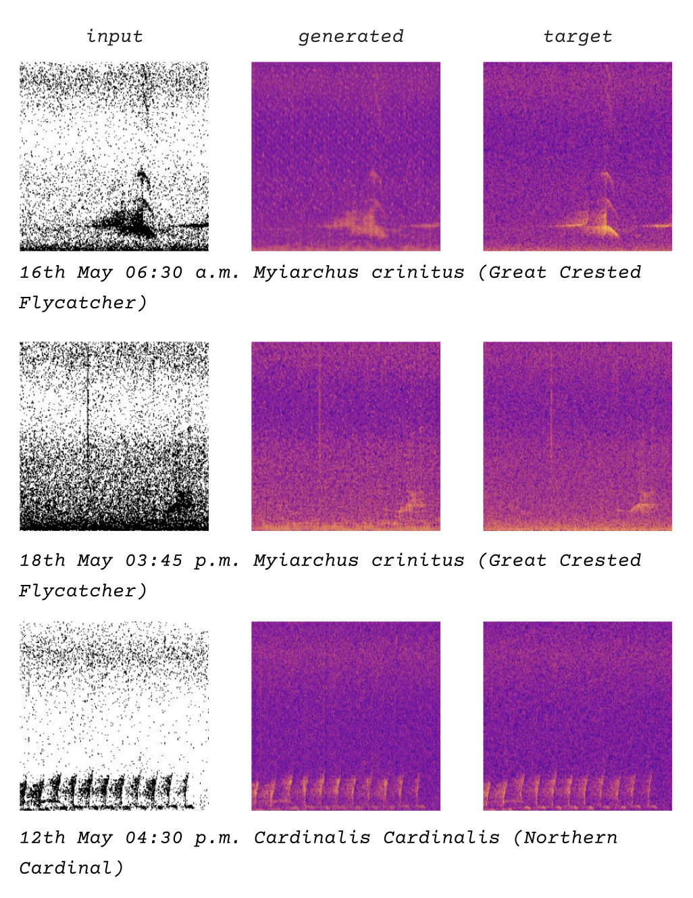
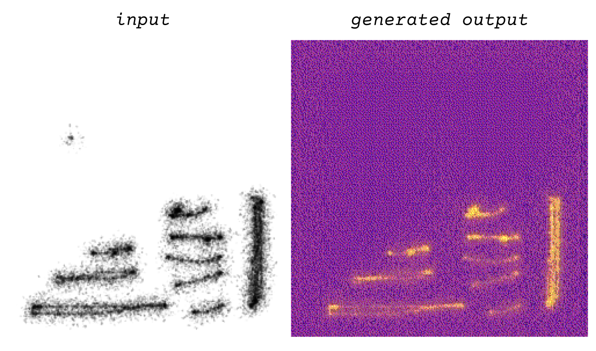
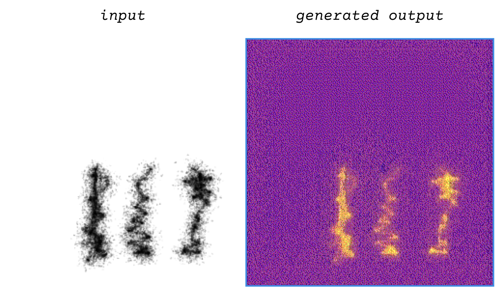

Laura Cortés-Rico
Laura installed a recording device in a bird sanctuary less than one mile away from a planned data center site in upstate NY. Capturing 1 minute every 15 minutes during May 2026, more than 900 3-second segments of birds singing were identified from 89 different species. Laura's pix2pix dataset comprised spectrograms from these recordings, paired with binary-thresholded versions of the images, allowing the model to learn to go from a minimal black-and-white image to a spectrogram. This allowed Laura to build a web application where one could generate spectrograms from their drawings or upload them, and then use the Griffin-Lim algorithm, implemented in JavaScript, to convert the pix2pix output back into audio. As I play with the application, I am struck by how similar all the audio sounds to birdsong or the source material.


generated output converted to audio:
generated output converted to audio: